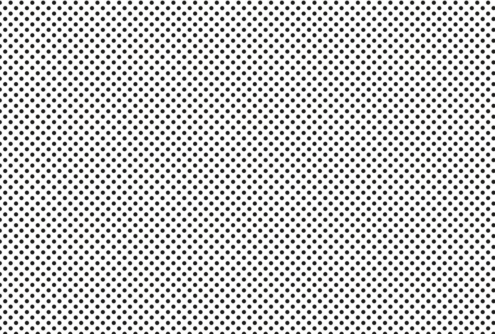
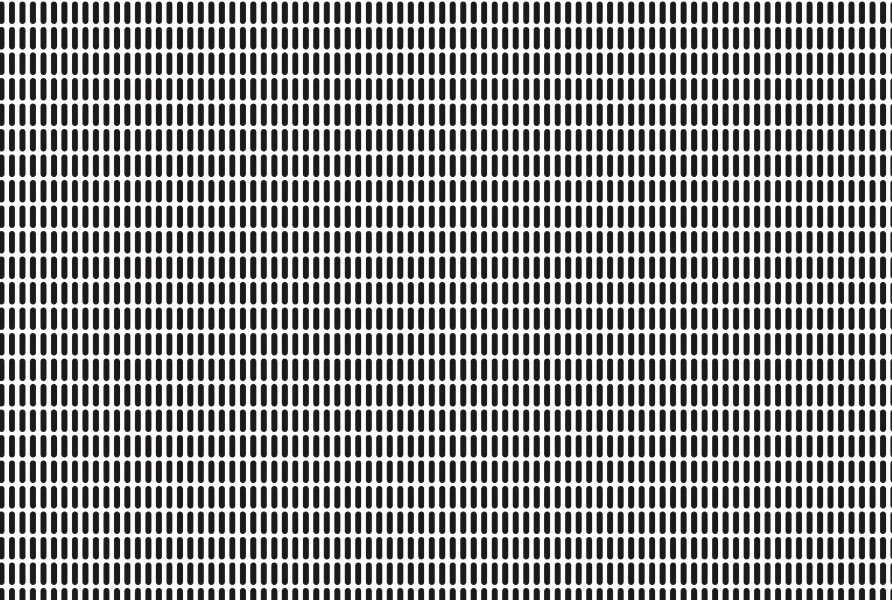
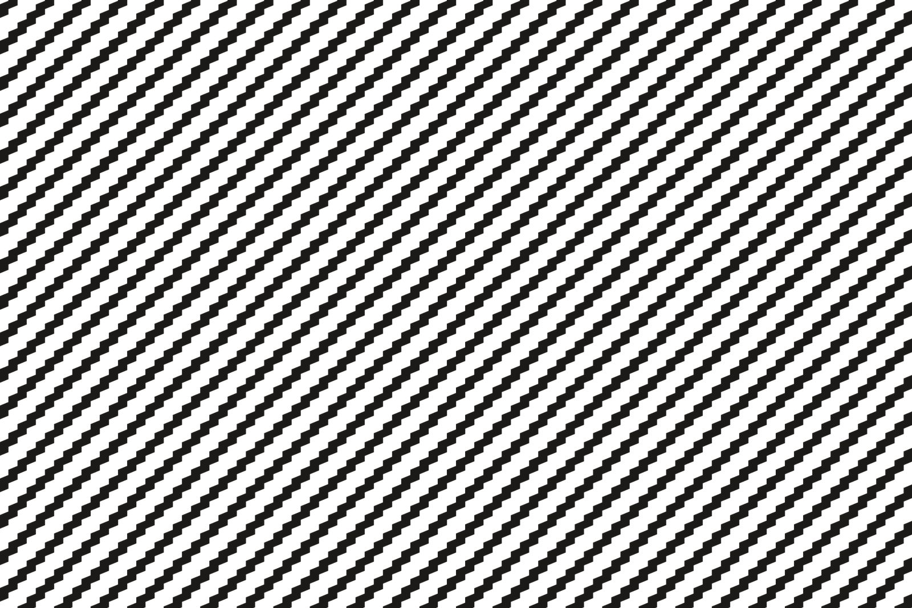
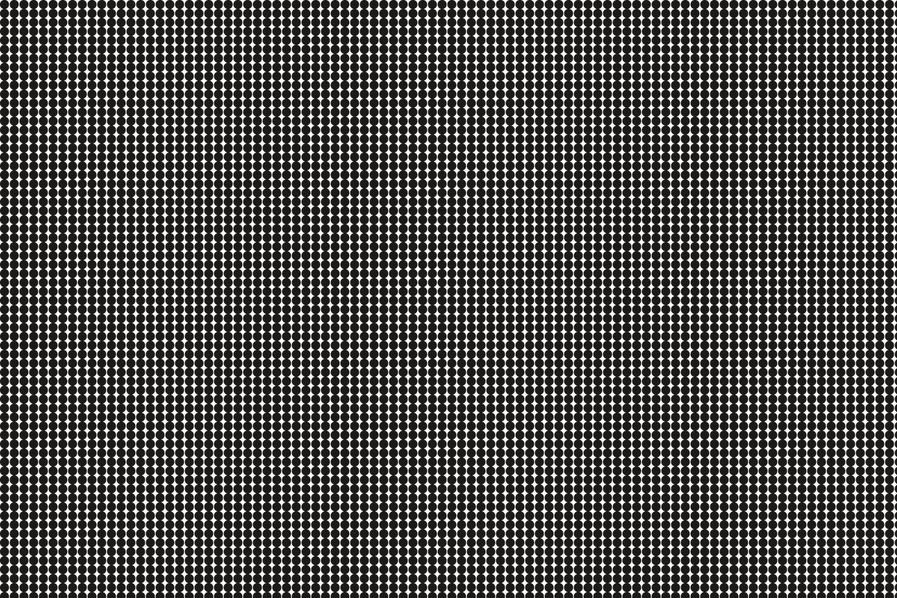
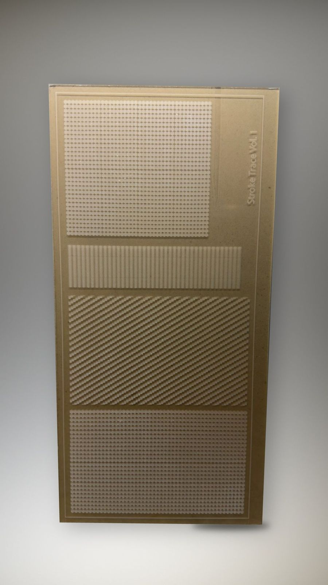

Stroke Trace Vol. 1
Four engraved surface textures for instant material finishes in any sketch.
 4 texturesDouble-sided
4 texturesDouble-sided
Scope
A single rubbing plate with four textured fields: offset dot, rib, carbon twill and dot matrix. Slip it under paper to add material finishes to a sketch with pencil, crayon or pastel.
Goals
Speed up material rendering, so designers can show a texture in seconds instead of drawing it by hand.
General Approach
Build a library of common product textures through iterative pattern tests and laser-etched prototypes.
Audience
Industrial design students, concept artists and sketch-heavy professionals who need fast, believable material callouts in ideation sketches and presentation boards.
Each field maps to a real material.
01Offset Dot
A staggered grid of small dots that reads as perforated metal or a speaker grille.
How to use: Place it under the grille area of your sketch and rub lightly with the side of a pencil. Press harder near the edges to suggest depth.

02Rib
Parallel vertical ridges that copy the ribbed plastic on grips, handles and buttons.
How to use: Line the ribs up with the direction of the grip on your sketch, then rub in one direction with crayon or pastel for clean, even lines.

03Carbon Twill
A stepped diagonal weave that gives the look of carbon fiber and woven composites.
How to use: Rotate the plate so the weave follows the form of the part, then rub with a soft pencil. Add a white highlight on top to make it look glossy.

04Dot Matrix
A tight field of dots that reads as knurling or textured rubber.
How to use: Use it on contact surfaces like knobs and handles. Rub firmly for a dark grip texture, or lightly for a soft-touch finish.

Cheap to engrave, fast to make, usable on both sides.
Acrylic engraves easily and cheaply, which speeds up production. Both sides can be engraved, so one plate holds double the textures.
- MaterialLaser-engraved acrylic
- MediaPencil · Crayon · Pastel
- EngravingRaster, 300 DPI
- Laser60 W CO₂ · 100% speed / 25% power
